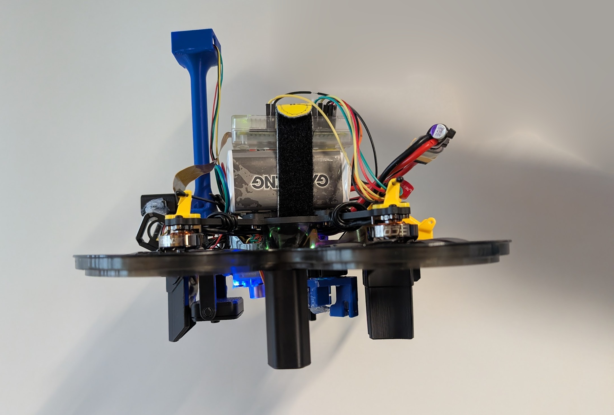
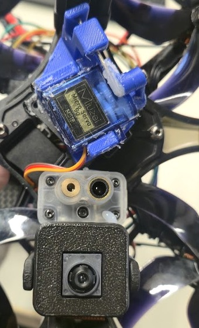
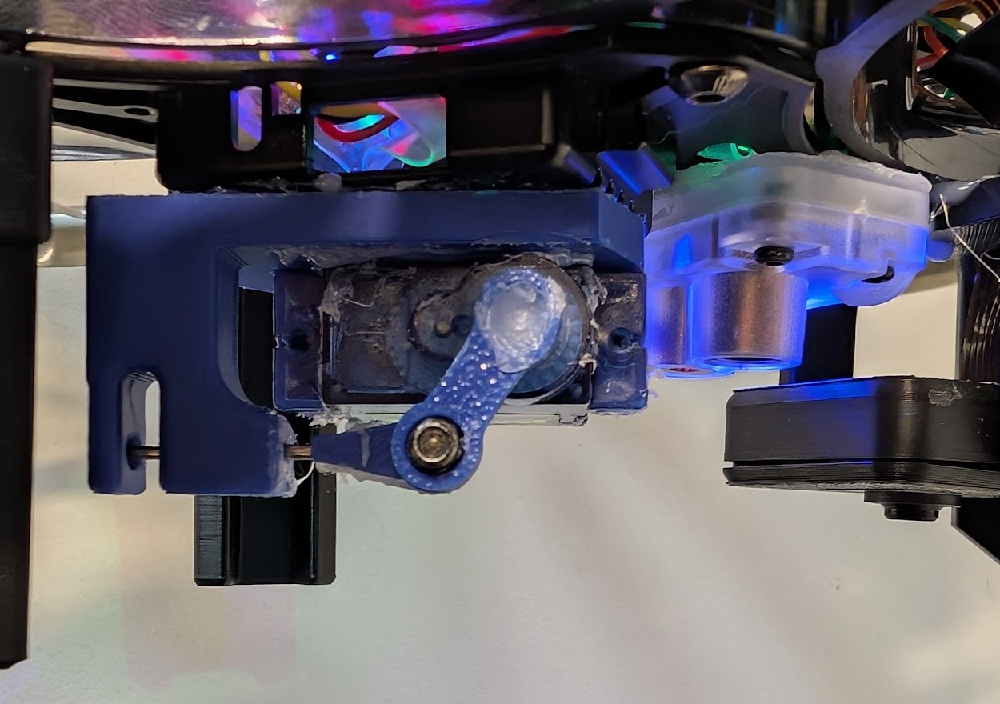

KI-Drohne mit AprilTag-Abwurf
Sebastian Urmann · Serkan Savranoglu

Blick von unten

Tag erkannt → Last fällt
Der Abwurf

Selbst gedruckt
 Abwurfhebel
Abwurfhebel Servohalter
Servohalter Kameragehäuse
Kameragehäuse Dämpferfüße
DämpferfüßeFirmware im Simulator
Die neue Firmware wurde zuerst in ArduPilot-SITL geprüft: einem simulierten Fluggerät mit demselben Softwarestand wie an Bord.
Drei Szenarien: Schweben auf optischem Fluss, beide Abstandssensoren gleichzeitig, und der Verlust der Bodenstation mit anschließender Landung.
Flugversuche im August
| 20.08. | Erster Flug. Stieg über die befohlene Höhe und blieb oben — an der Leine gehalten, Akku gezogen. |
| 21.08. | Zwei Starts, kein Abheben: der Schub lag bei der Hälfte des Nötigen. |
| 21.08. abends | Nach dem Wiederaufbau das erste echte Abheben — 0,57 m, vom Höhenwächter gestoppt. |
Der Absturz
Bei einem der Startversuche wurde das Zeitlimit überschritten. Die Software forderte daraufhin eine Landung an.
Die Höhenregelung verwendete eine um zehn Kilometer fehlerhafte Filterschätzung. Auf die Landungsanforderung folgte maximaler Schub; die Drohne kollidierte mit der Hallendecke. Die Drohne wurde zerstört. Es gab keine Verletzten.
Befunde aus den Tests
- Inkonsistente Höhenkonfiguration. Widersprüchliche Parameter verhinderten eine gültige Höhenfusion. Im Stillstand meldete der Filter −10 000 m Höhe und 38 m/s Sinkgeschwindigkeit.
- Abweichende Beschleunigung bei laufenden Motoren. Der Messwert stieg von 9,79 m/s² bei ausgeschalteten Motoren auf 10,65 m/s² im Leerlauf. Der Filter leitete daraus eine Steigbewegung ab, obwohl die Drohne am Boden stand.
Was wir geändert haben
- Bei einem Startabbruch am Boden wird die Drohne disarmed.
- Der Flugstatus wird erst nach bestätigtem Abheben gesetzt.
- Geschätzte Steigrate und gemessener Bodenabstand werden kontinuierlich abgeglichen.
- Ein eigener Firmware-Build ergänzt die im Serienimage fehlende Fusion des optischen Flusses.
Stand & nächster Schritt
Tag-Erkennung und Servo-Ansteuerung sind implementiert; beide Abstandssensoren liefern Messwerte. Der Flugtest mit der neuen Firmware steht aus.
Nächster Schritt: die Kompassabweichung klären. Die Vorflugprüfung
(Check mag field) meldet rund 295 mG Abweichung bei 200 mG
Schwelle und sperrt den Start.